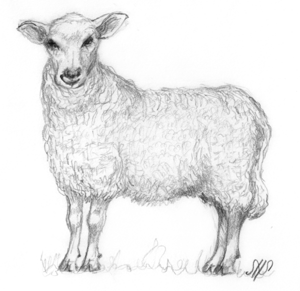
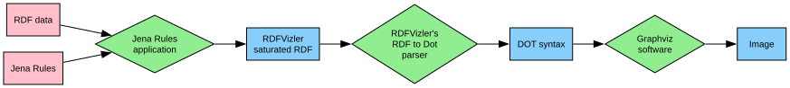
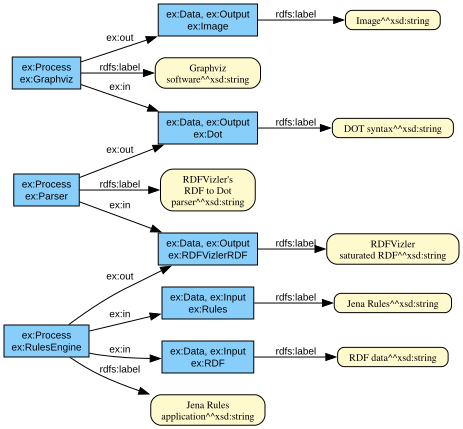
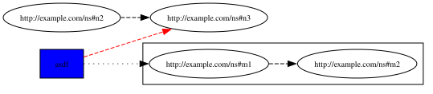

RDFVizler
Introduction
RDFVizler is a simple RDF visualisation software built with the Apache Jena Java API and Graphviz visualisation software. It requires Java 11 or later.
RDFVizler visualises RDF graphs by parsing a designated RDFVizler OWL vocabulary into Graphviz's DOT language and then straight-forwardly to images using the Graphviz software. The RDFVizler vocabulary acts as a mere "RDF wrapper language" for the DOT language, all graph, edge and node attributes are taken directly from DOT.
RDFVizler can visualise any RDF graph (also those which do not use the RDFVizler vocabulary). It does this by allowing rules (in Jena rule syntax) to be applied to the input, rules which should add the necessary RDFVizler vocabulary statements in order to properly visualise the input. This means that RDFVizler can visualise RDF graphs in many different ways as specified by the rules. A default rule set is available, suited for generic RDF graph visualisation.

Example
This example will show how we can generate the above graph visualisation from an RDF graph.
The RDF graph describes the main processing steps performed by the RDFVizler software with their input and output data. The RDF graph uses no particular vocabulary—it could be any other vocabulary, the point we want to make is that we can write rules that fit the input data to make pretty graph visualisation from it.
@prefix ex: <http://example.com/ns#> . ex:RulesEngine a ex:Process ; rdfs:label "Jena Rules\napplication" ; ex:in ex:RDF , ex:Rules ; ex:out ex:RDFVizlerRDF . ex:Parser a ex:Process ; rdfs:label "RDFVizler's\nRDF to Dot\nparser" ; ex:in ex:RDFVizlerRDF ; ex:out ex:Dot . ex:Graphviz a ex:Process ; rdfs:label "Graphviz\nsoftware" ; ex:in ex:Dot ; ex:out ex:Image . ex:RDF a ex:Data, ex:Input ; rdfs:label "RDF data" . ex:Rules a ex:Data, ex:Input ; rdfs:label "Jena Rules" . ex:RDFVizlerRDF a ex:Data, ex:Output ; rdfs:label "RDFVizler\nsaturated RDF" . ex:Dot a ex:Data, ex:Output ; rdfs:label "DOT syntax" . ex:Image a ex:Data, ex:Output ; rdfs:label "Image" .
To visualise the RDF data we use the following rule set
that draws processes as diamonds and data nodes as boxes, and
makes edges out of each ex:in and ex:out relationship.
@prefix ex: <http://example.com/ns#> @prefix : <urn:temp#> // Create graph instance and set some defaults: [init: -> (:graph rdf:type rvz:RootGraph) (:graph rdf:type rvz:DiGraph) (:graph rvz-a:rankdir "LR") (:graph rvz-a:center "true") (:graph rvz-a:overlap "false") (:graph rvz-a:splines "true") // node defaults (:graph rvz-n:fontname "Arial") (:graph rvz-n:fontsize "10px") (:graph rvz-n:style "filled") // edge defaults (:graph rvz-e:fontname "Arial") (:graph rvz-e:fontsize "10px") ] [Process-in-out: (?process rdf:type ex:Process) (?process ex:in ?source) (?process ex:out ?target) // invent ids for graph edges: makeSkolem(?inedge, ?source, ?process) makeSkolem(?outedge, ?process, ?target) -> // add nodes to the graph: (:graph rvz:hasNode ?process) (:graph rvz:hasNode ?source) (:graph rvz:hasNode ?target) // add edges to the graph: (:graph rvz:hasEdge ?inedge) (:graph rvz:hasEdge ?outedge) // set source and target for each edge: (?inedge rvz:hasSource ?source) (?inedge rvz:hasTarget ?process) (?outedge rvz:hasSource ?process) (?outedge rvz:hasTarget ?target) ] [Process-styling: (?x rdf:type ex:Process) -> (?x rvz-a:shape "diamond") (?x rvz-a:fillcolor "lightgreen") ] [Data-styling: (?x rdf:type ex:Data) -> (?x rvz-a:shape "box") (?x rvz-a:style "filled") ] [InputData-styling: (?x rdf:type ex:Input) -> (?x rvz-a:fillcolor "pink") ] [OutputData-styling: (?x rdf:type ex:Output) -> (?x rvz-a:fillcolor "lightskyblue") ] [Labels: (?any rdfs:label ?label) -> (?any rvz-a:label ?label) ]
This is how we use the RDFVizler software to process the input + rules to output svg:
java -jar rdfvizler.jar --rules example/intro-rules.jrule example/intro-data.ttl > example/intro-image.svg
And this is how the svg image looks like:
RDFVizler can also output the saturated RDF or the DOT rendering of the graph; here is the DOT output of our example:
digraph "urn:temp#graph" {
overlap = "false"; rankdir = "LR"; splines = "true"; center = "true";
node [ fontsize = "10px"; style = "filled"; fontname = "Arial" ];
edge [ fontname = "Arial"; fontsize = "10px" ];
// NODES
"http://example.com/ns#Image" [ fillcolor = "lightskyblue"; style = "filled"; label = "Image"; shape = "box" ];
"http://example.com/ns#Graphviz" [ fillcolor = "lightgreen"; label = "Graphviz
software"; shape = "diamond" ];
"http://example.com/ns#Dot" [ fillcolor = "lightskyblue"; style = "filled"; label = "DOT syntax"; shape = "box" ];
"http://example.com/ns#Parser" [ fillcolor = "lightgreen"; label = "RDFVizler's
RDF to Dot
parser"; shape = "diamond" ];
"http://example.com/ns#RDF" [ fillcolor = "pink"; style = "filled"; label = "RDF data"; shape = "box" ];
"http://example.com/ns#RulesEngine" [ fillcolor = "lightgreen"; label = "Jena Rules
application"; shape = "diamond" ];
"http://example.com/ns#Rules" [ fillcolor = "pink"; style = "filled"; label = "Jena Rules"; shape = "box" ];
"http://example.com/ns#RDFVizlerRDF" [ fillcolor = "lightskyblue"; style = "filled"; label = "RDFVizler
saturated RDF"; shape = "box" ];
// EDGES
"http://example.com/ns#Graphviz" -> "http://example.com/ns#Image";
"http://example.com/ns#Dot" -> "http://example.com/ns#Graphviz";
"http://example.com/ns#Parser" -> "http://example.com/ns#Dot";
"http://example.com/ns#RDFVizlerRDF" -> "http://example.com/ns#Parser";
"http://example.com/ns#RDF" -> "http://example.com/ns#RulesEngine";
"http://example.com/ns#Rules" -> "http://example.com/ns#RulesEngine";
"http://example.com/ns#RulesEngine" -> "http://example.com/ns#RDFVizlerRDF";
}
This is the result of processing the input using the default rule set:
java -jar rdfvizler.jar --rules rules/rdf.jrule example/intro-data.ttl > example/intro-image-default.svg

Software
The RDFVizler software is written in Java and is available as a runnable jar at https://github.com/dyreriket/rdfvizler/releases.
This is its help output, which give hints to its current features and supported input and output formats.
java -jar rdfvizler.jar --help
RDFVizler: RDF visualisation
Usage:
java -jar rdfvizler-[version].jar [--help] [--mergeInput] [--skipRules]
[--version]
[--inputFormatRDF=<inputFormatRDF>]
[--outputFormatRDF=<outputFormatRDF>]
[-i=<outputFormatImage>] [-r=<rules>]
[-x=<mode>] RDF_FILES...
Description:
RDFVizler visualises RDF by parsing a designated RDF RDFVizler vocabulary into
Graphviz syntax and processing this to a graph using Graphviz' dot software.
For more details, see http://rdfvizler.dyreriket.xyz.
Parameters:
RDF_FILES... Input RDF: URIs or file paths
Options:
-x, --executionMode=<mode>
What output to produce. (legal values: rdf, dot, image;
default: image)
-r, --rules=<rules> Input rules: URI or file path (default: bundled rules)
--skipRules Skip rule application to input? (default: false)
--inputFormatRDF=<inputFormatRDF>
Format of RDF input (e.g. ttl, rdf, nt; default: guessed by
file extension, then Turtle)
--mergeInput Merge input files to a single model to visualise?
--outputFormatRDF=<outputFormatRDF>
Format of RDF output (e.g. ttl, rdf, nt; default: Turtle)
-i, --outputFormatImage=<outputFormatImage>
Format of image output (e.g. SVG_STANDALONE, PNG; default:
SVG_STANDALONE)
--version Display version info
--help Display this help message
Contribute
The project is hosted at github, http://github.com/dyreriket/rdfvizler/, is open source under LGPL and open for contributions.
The project is set up using maven and employs a somewhat strict code style regime in order to let the code remain consistent across different contributors. All tests can be run with
mvn clean verify
The project consists of 3 modules:
corecontains the core functionality: RDF processing, RDF to Dot parser, interaction with the dot executable, and output.clicontains (just) the command line interfaceservletcontains (just) a web servlet
Vocabulary
This is the RDFVizler vocabulary. Read the rdfs:comment on the ontology
and see the example below to learn the basics of using the
vocabulary.
Source: ./vocabulary/core.owl.ttl
<http://rdfvizler.dyreriket.xyz/vocabulary/core> a owl:Ontology ;
owl:versionIRI <http://rdfvizler.dyreriket.xyz/vocabulary/core-0.1> ;
owl:versionInfo "0.1" ;
dc:date "2019-01-03" ;
rdfs:label "RDFVizler vocabulary" ;
rdfs:comment """
The RDFVizler vocabulary describes graphs which can be converted to
Graphviz dot graphs and visualised with Graphviz' dot software.
The basic rules of using the RDFVizler vocabulary are:
- There must be a single rvz:Rootgraph, this graph can also be a
rvz:StrictGraph and a rvz:DiGraph (directed graph).
- All rvz:Node-s, rvz:Edge-s and rvz:SubGraph-s must be
associated with the rvz:Graph to which is belongs, with
respectively the properties rvz:hasNode, rvz:hasEdge and
rvz:hasSubGraph.
- An rvz:Edge must have a rvz:hasSource and rvz:hasTarget
which are rvz:Node-s.
- The vocabulary does not specify any resources in the namespaces
rvz-a, rvz-n and rvz-e, but these are "catch-all" namespaces
that are used to associate Graphviz attributes to Graphs, Nodes,
and Edges. Any property placed in these namespaces are
interpreted as attributes, e.g., the property rvz-a:label is
used set labels since label is an attribute in the DOT language.
The namespace rvz-a is used to associate an attribute to any
class, i.e, rvz:Node, rvz:Egde or rvz:Graph, while the
namespaces rvz-n and rvz-e are used to specify default node
and edge attributes, respectively, to a Graph.
""" ;
rdfs:seeAlso <http://rdfvizler.dyreriket.xyz> ;
dc:creator <http://folk.uio.no/martige/foaf#me> ;
foaf:logo <http://rdfvizler.dyreriket.xyz/rdfvizler.png> .
rvz:Graph a owl:Class.
rvz:RootGraph a owl:Class;
rdfs:subClassOf rvz:Graph ;
rdfs:comment "Every graph must have exactly one RootGraph." .
rvz:DiGraph a owl:Class;
rdfs:subClassOf rvz:RootGraph ;
rdfs:comment "A directed graph, i.e., edges have a direction" .
rvz:StrictGraph a owl:Class;
rdfs:subClassOf rvz:RootGraph ;
rdfs:comment """A strict graph "forbids the creation of multi-edges".
For more details see https://www.graphviz.org/doc/info/lang.html. """ .
rvz:Node a owl:Class ;
rdfs:comment "A graph node" .
rvz:Edge a owl:Class ;
rdfs:comment "A graph edge. An edge must have a source node and a target node." .
rvz:hasID a owl:DatatypeProperty ;
rdfs:comment "Associates an ID label to a graph, node or edge.".
rvz:hasNode a owl:ObjectProperty ;
rdfs:domain rvz:Graph ;
rdfs:range rvz:Node ;
rdfs:comment "Associates a node with the graph to which it belongs." .
rvz:hasEdge a owl:ObjectProperty ;
rdfs:domain rvz:Graph ;
rdfs:range rvz:Edge ;
rdfs:comment "Associates an edge with the graph to which it belongs." .
rvz:hasSource a owl:ObjectProperty ;
rdfs:domain rvz:Edge ;
rdfs:range rvz:Node ;
rdfs:comment "Associates an edge with its source node." .
rvz:hasTarget a owl:ObjectProperty ;
rdfs:domain rvz:Edge ;
rdfs:range rvz:Node ;
rdfs:comment "Associates an edge with its target node." .
rvz:hasSubGraph a owl:ObjectProperty ;
rdfs:domain rvz:Graph ;
rdfs:range rvz:Graph .
Example
This example illustrates the (direct) use of the RDFVizler vocabulary.
Source: ./vocabulary/example.ttl
## This is an example of a graph with nodes, edges, and subgraph. ## This is the root graph resource. This graph is directed and strict. :root a rvz:RootGraph , rvz:DiGraph , rvz:StrictGraph ; rvz-a:rankdir "LR"; rvz-a:nodesep "0.3"; ## Set attributes on the graph using rvz-a namespace rvz-n:fontsize "10px"; rvz-n:style "box"; ## Set default node attributes using rvz-n namespace rvz-e:style "dashed"; ## Set default edge attribute using rvz-e namespace rvz:hasNode :n1, :n2, :n3 ; ## List the nodes of the graph rvz:hasEdge :e1, :e2, :e3 ; ## List the edges of the graph rvz:hasSubGraph :g1. ## List the subgraphs of the graph ## This is a node. :n1 rvz:hasID "asdf" ; ## Specify ID for node. rvz-a:shape "box"; rvz-a:style "filled"; rvz-a:fillcolor "blue" . ## Node attributes using rvz-a namespace. ## This is an edge. :e1 rvz:hasSource :n1 ; rvz:hasTarget :m1 ; ## Source and target node for edge. rvz-a:style "dotted". ## Edge attribute using rvz-a namespace. :e2 rvz:hasSource :n1 ; rvz:hasTarget :n3 ; rvz-a:color "red". :e3 rvz:hasSource :n2 ; rvz:hasTarget :n3 . ## This is a subgraph. :g1 rvz:hasID "clusterG1" ; rvz:hasNode :m1, :m2; rvz:hasEdge :f1 . :f1 rvz:hasSource :m1; rvz:hasTarget :m2.
This file may be visualised with RDFVizler with the following command. We use
--skipRules since the input RDF graph already uses the RDFVizler
vocabulary.
java -jar rdfvizler.jar vocabulary/example.ttl --skipRules > vocabulary/example.svg
The resulting output is this:

Rules
This is the default rule set.
Source: ./rules/rdf.jrule.
@prefix : <urn:temp#> // Set some defaults [init: -> (:graph rdf:type rvz:RootGraph) (:graph rdf:type rvz:DiGraph) (:graph rvz-a:rankdir "LR") (:graph rvz-a:nodesep "0.3") (:graph rvz-a:ranksep "0.3") (:graph rvz-a:center "true") (:graph rvz-a:overlap "false") (:graph rvz-a:splines "true") // node defaults (:graph rvz-n:shape "box") (:graph rvz-n:fontname "Arial") (:graph rvz-n:fontsize "10px") (:graph rvz-n:height "0") (:graph rvz-n:width "0") // edge defaults (:graph rvz-e:fontname "Arial") (:graph rvz-e:fontsize "10px") ] // Add nodes and edges for (almost) all triples. [Triples2Dot: (?xs ?xp ?xo) namespace(?xp, ?ns) // need this to terminate: do not include rule produced triples notEqual(?ns, "urn:temp#") notEqual(?ns, "http://rdfvizler.dyreriket.xyz/vocabulary/core#") notEqual(?ns, "http://rdfvizler.dyreriket.xyz/vocabulary/attribute#") notEqual(?ns, "http://rdfvizler.dyreriket.xyz/vocabulary/attribute-default-node#") notEqual(?ns, "http://rdfvizler.dyreriket.xyz/vocabulary/attribute-default-edge#") // do not include type relationships notEqual(?xp, rdf:type) // literals cannot be subjects, so we just skolemise everything to get a usable ID: makeSkolem(?s, ?xs) makeSkolem(?p, ?xs, ?xp, ?xo) makeSkolem(?o, ?xo) shortvalue(?xp, ?pname) -> (?s rvz:hasID ?xs) (?o rvz:hasID ?xo) (:graph rvz:hasEdge ?p) (:graph rvz:hasNode ?s) (:graph rvz:hasNode ?o) (?p rvz:hasSource ?s) (?p rvz:hasTarget ?o) (?p rvz-a:label ?pname) ] // style URIs [URIs: (:graph rvz:hasNode ?node) (?node rvz:hasID ?id) notBNode(?id) notLiteral(?id) typedvalue(?id, ?name) -> (?node rvz-a:label ?name) (?node rvz-a:style "filled") (?node rvz-a:fillcolor "lightskyblue") (?node rvz-a:URL ?id) ] // style blank nodes [Blanks: (:graph rvz:hasNode ?node) (?node rvz:hasID ?id) isBNode(?id) typedvalue(?id, ?name) -> (?node rvz-a:label ?name) (?node rvz-a:style "filled,dashed") (?node rvz-a:fillcolor "gray90") (?node rvz-a:height ".3") (?node rvz-a:width ".3") ] // style literals [Literals: (:graph rvz:hasNode ?node) (?node rvz:hasID ?id) isLiteral(?id) typedvalue(?id, ?name) -> (?node rvz-a:label ?name) (?node rvz-a:style "rounded,filled") (?node rvz-a:fillcolor "lemonchiffon") (?node rvz-a:fontname "Times") ]
Built-in and custom rule functions
The functionality of rules may be extended in different ways, see https://jena.apache.org/documentation/inference/#extensions. RDFVizler includes a few custom built-ins which are kept in https://github.com/dyreriket/rdfvizler/tree/master/rdfvizler-core/src/main/java/xyz/dyreriket/rdfvizler/rules. New built-ins should be added here, and must also be added to the RuleRegistrar in the same package to be made available for the use in rules. Please add a clear description of new built-ins and preferably also unit tests.
Contact
Please use the issues in the github project for all requests: https://github.com/dyreriket/rdfvizler/issues.
If this is impossible, then send email to
m.g.skjaeveland@gmail.com.